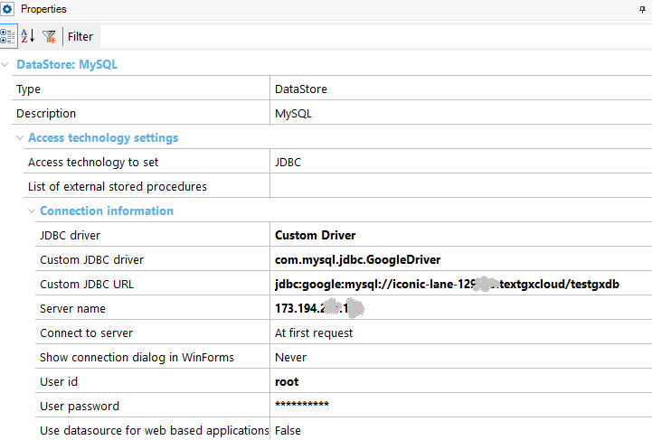

Deploy to Google App Engine - Datastore configuration
Before making a deployment to Google App Engine, you must configure your Data store to connect to MYSQL.
If the application is running in development mode (i.e., locally), use the com.mysql.jdbc.Driver (the default driver) to connect to the Mysql in Google app Engine. Then, choose JDBC Driver = Mysql JDBC Driver (Type 4):

But if the web application is in production mode (i.e., the application is going to be deployed), use com.mysql.jdbc.GoogleDriver to connect to your Cloud SQL instance. Then, in GeneXus, configure:
- Custom JDBC Driver= com.mysql.jdbc.GoogleDriver
- Custom JDBC URL = jdbc:google:mysql://<application>:<instance>/<database>

Build
Just to generate the client.cfg, do a build with this only.
| Backlinks |
| How to deploy an application to Google App Engine |